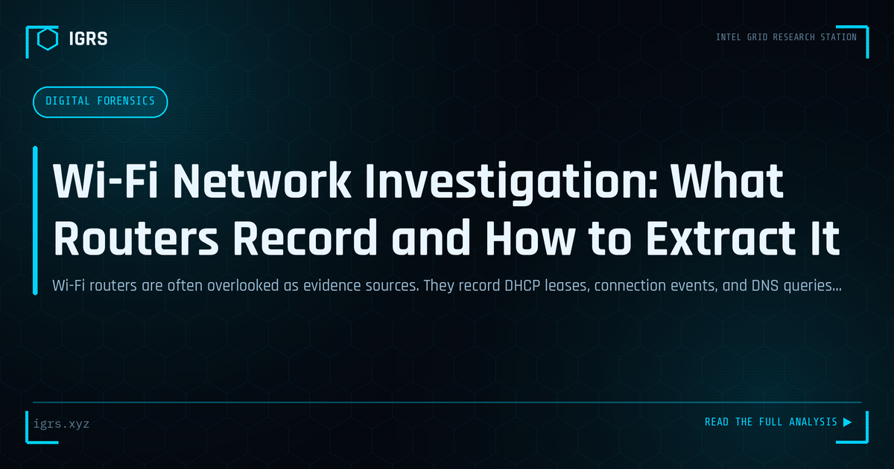

Wi-Fi Network Investigation: What Routers Record and How to Extract It
| File No. | IGRS-046/2026 |
| Subject | Forensic guide to Wi-Fi router evidence collection for incident and crime investigations |
| Category | Digital Forensics |
| Author | Manuj Kumar Pandey |
| Published | 2026-04-24 |
| Reading time | 5 minutes |
Wi-Fi routers are often overlooked as evidence sources. They record DHCP leases, connection events, and DNS queries that can place devices at specific times. How to extract this data.
The router as evidence source
Most investigations focus on end devices — phones, laptops, tablets. The Wi-Fi router through which these devices communicated is frequently overlooked, yet it records information that complements device-level evidence significantly. Router logs can establish that a specific device was connected to a network at a specific time, even when the device has been wiped.
What routers log by default
Consumer routers typically log: DHCP lease assignments (which MAC address received which IP, at what time, for how long), connection and disconnection events for wireless clients, and basic system events (reboots, configuration changes). What requires configuration: DNS queries, detailed traffic statistics, packet-level data. Enterprise and managed access points provide significantly richer logging.
Extraction methods
For devices with administrative access: access the admin interface (typically 192.168.1.1) and export logs from the system log section. Syslog to an external server stores logs forensically outside the router and is ideal for organizations that anticipate needing router evidence. For seized consumer devices: the web interface is usually accessible from any connected device after seizure.
ISP logs
When router-level logs are insufficient, ISPs maintain session records — connection times, assigned IP addresses, data volume. Indian ISPs are required to retain these under the IT Act. A Section 91 BNSS legal notice to the ISP for records associated with a specific IP address and time period is a standard investigative step that identifies the account holder.